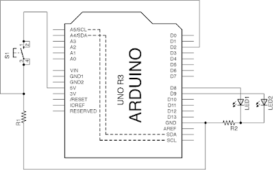
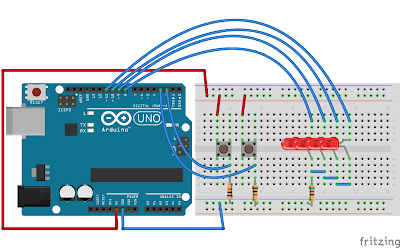

1.2 digital input
本章主要講述Arduino digital輸入的用法，分別有：準位觸發(level-trigger)、邊緣觸發(edge-trigger)、自鎖和模式轉換(轉mode)。
1.2 digital input準位觸發(level-trigger)效果電路圖程式碼說明邊緣觸發(edge-trigger)效果電路圖程式碼說明自鎖效果電路圖程式碼說明模式轉換效果電路圖程式碼說明動動腦
準位觸發(level-trigger)
準位觸發是指當你按著按鍵時，Arduino才執行對應的工作，會當放手時，便會停止。
效果
今次例程中，當按著按鍵時， Arduino 內建的LED會開，當放手時便會關。
電路圖

程式碼
x1byte LED = 13;2byte push_button = 2;3
4void setup(){5 pinMode(LED, OUTPUT);6 pinMode(push_button, INPUT);7}8
9void loop(){10 if(digitalRead(push_button) == HIGH){11 digitalWrite(LED, HIGH);12 }13 else{14 digitalWrite(LED, LOW);15 }16}說明
按鍵按線有兩種接法，分別為上拉和下拉，效果剛好相反。


用pull-down resistor的話, 按鍵按下時，2腳收到的信號是HIGH, 放手時是LOW。用pull-up resistor的話就剛好相反。一般會建議用下拉比較好，不用在編程時再將邏輯反轉，但其實Arduino本身是內置上拉(pull-up)電阻的，如果想減少接線，也可以使用，編程時只要小心點，試多幾次，一般上拉下拉問題都不大。
digitalRead(push_button) : 用來讀取push_button腳位(這例子是2腳)的狀態，如果是放手，就關13腳接著的內建LED，按著時就亮LED。
邊緣觸發(edge-trigger)
邊緣觸發是指當你按下按鍵的瞬間，Arduino執行對應的工作，即使按下之後繼續按著按鍵也不會有影響。
邊緣觸發有分兩種，上升緣觸發和下降緣觸發，即按下的一瞬觸發和放手的一瞬間觸發。
效果
今次例程中，當按下按鍵的瞬間， Arduino 內建的LED會亮一秒鐘。
電路圖
程式碼
xxxxxxxxxx261byte LED = 13;2byte push_button = 2;3boolean button_state, last_button_state;4unsigned long timer;5
6void setup(){7 pinMode(LED, OUTPUT);8 pinMode(push_button, INPUT);9}10
11void loop(){12 //=== 1 ===================================13 button_state = digitalRead(push_button);14
15 //=== 2 ===================================16 if(button_state != last_button_state && button_state == HIGH){17 timer = millis();18 }19 20 //=== 3 ===================================21 last_button_state = button_state;22 23 //=== 效果 =================================24 if(millis() - timer <=1000) digitalWrite(LED, HIGH);25 else digitalWrite(LED, LOW);26}說明
這程式的結構分為三個部分：
button_state = digitalRead(push_button);if(button_state != last_button_state && button_state == HIGH){}last_button_state = button_state;
第一部分是用一個boolean變數button_state紀錄下push_button(即2腳)的狀態。
第二部分， !=即為不等於(詳見這裡)，button_state不等於last_button_state即按下去的一瞬間，兩個boolean才會不同，而button_state == HIGH，即上升緣觸發，如果要下降緣觸發，就設button_state == LOW。
第三部分，last_button_state = button_state要放在loop()的最下方，讓每一個loop()的循環更新一次。
如果有兩個push_button，就應該是：
button_state0 = digitalRead(push_button0);button_state1 = digitalRead(push_button1);if(button_state0 != last_button_state0 && button_state0 == HIGH){}if(button_state1 != last_button_state1 && button_state1 == HIGH){}last_button_state0 = button_state0;last_button_state1 = button_state1;
這二、三段可以在中間插入其他程式碼。
又如果，要兩個按鍵的工作互不干擾，就不能用delay()作為延時，所以，上述程式碼需要結合前一章的多工作業，改成以下：

所以最終你會見到程式碼分為4個主要小段:
xxxxxxxxxx141//=== 1 ===================================2button_state = digitalRead(push_button);3
4//=== 2 ===================================5if(button_state != last_button_state && button_state == HIGH){6 timer = millis();7}8
9//=== 3 ===================================10last_button_state = button_state;11
12//=== 效果 =================================13if(millis() - timer <=1000) digitalWrite(LED, HIGH);14else digitalWrite(LED, LOW);自鎖
電子電路的物理按鍵，有一種是自鎖開關，即按下時會觸發某事，再按多一下時才解除，在Arduino中，一樣可以用一顆普通的按鍵，用程式做到這效果。
效果
今次例程中，當按下按鍵時，Ardunio內建的LED會亮起，當再按下時便會關。
電路圖
程式碼
xxxxxxxxxx241byte LED = 13;2byte push_button = 2;3boolean button_state, last_button_state;4unsigned long button_counter;5
6void setup(){7 pinMode(LED, OUTPUT);8 pinMode(push_button, INPUT);9}10
11void loop(){12 button_state = digitalRead(push_button);13
14 if(button_state != last_button_state && button_state == HIGH){15 button_counter++; 16 }17 18 //==== 新增==================================================19 if(button_counter % 2 == 0) digitalWrite(LED, LOW);20 else digitalWrite(LED, HIGH);21 //==========================================================22 23 last_button_state = button_state;24}說明
這程式碼包括上一節edge-trigger的三個部分。再在中間加插了一段：
xxxxxxxxxx21if (button_counter % 2 == 0) digitalWrite(LED, LOW);2else digitalWrite(LED, HIGH);button_counter % 2的意思就是將button_counter除2，取其餘數，餘數等於0，即是雙數，餘數等於1，即是單數，用單雙數去轉換LED的開關。
模式轉換
模式轉換是融會了上兩個例程之後的效果。用Arduino時如果要做顯示，我們一般會用現成的LCD模組顯示，但LCD一般只有兩行，每行16個字母，所以要顯示很多資訊時，會加一個按鍵，每按一下就翻下一版。
效果
今次例程中，當按下按鍵時，LED1和LED2會跟隨二進制的模式分別亮起，即00, 01, 10, 11四個模式。
電路圖

程式碼
xxxxxxxxxx381byte LED[] = {8, 9};2byte push_button = 2;3boolean button_state, last_button_state;4unsigned long button_counter;5
6void setup(){7 pinMode(LED[0], OUTPUT);8 pinMode(LED[1], OUTPUT);9 pinMode(push_button, INPUT);10}11
12void loop(){13 button_state = digitalRead(push_button);14
15 if(button_state != last_button_state && button_state == HIGH){16 button_counter++; 17 }18 19
20 if(button_counter % 4 == 0) {21 digitalWrite(LED[0], LOW);22 digitalWrite(LED[1], LOW);23 }24 else if(button_counter % 4 == 1){25 digitalWrite(LED[0], LOW);26 digitalWrite(LED[1], HIGH);27 }28 else if(button_counter % 4 == 2){29 digitalWrite(LED[0], HIGH);30 digitalWrite(LED[1], LOW);31 }32 else if(button_counter % 4 == 3){33 digitalWrite(LED[0], HIGH);34 digitalWrite(LED[1], HIGH);35 }36
37 last_button_state = button_state;38}說明
承上一節自鎖，
xxxxxxxxxx161if(button_counter % 4 == 0) {2 digitalWrite(LED[0], LOW);3 digitalWrite(LED[1], LOW);4 }5 else if(button_counter % 4 == 1){6 digitalWrite(LED[0], LOW);7 digitalWrite(LED[1], HIGH);8 }9 else if(button_counter % 4 == 2){10 digitalWrite(LED[0], HIGH);11 digitalWrite(LED[1], LOW);12 }13 else if(button_counter % 4 == 3){14 digitalWrite(LED[0], HIGH);15 digitalWrite(LED[1], HIGH);16 }在把餘數的概念發展開去，就可以變成模式轉換，上例是有4個模式，如果只需要3個模式或者要5個模式，就將%4分別轉成%3和%5。
動動腦
試根據第二個例題的edge-trigger，用兩個按鍵，分別控制兩粒LED，按鍵1按下時，LED1亮1秒，按鍵2按下時，LED2亮1秒，互相不會干擾，即，LED1計時中，按鍵2仍能正常運作。
承上題的線路，再加多兩顆LED，結合例程3自鎖和例程4模式轉換，當每按下按鍵1一下時，LED跑馬燈向右走一步，每按下按鍵2一下時，LED跑馬燈向左走一步。
